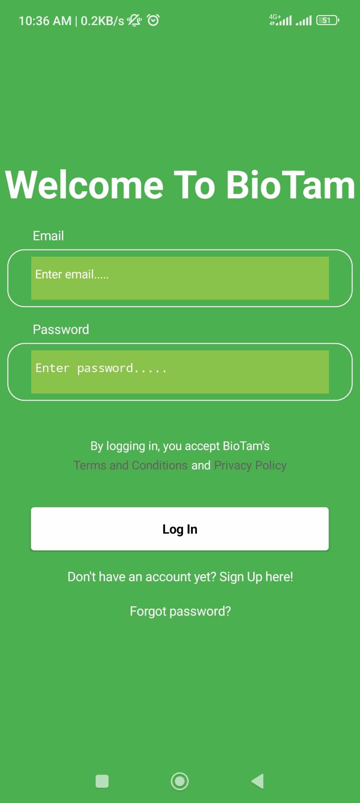
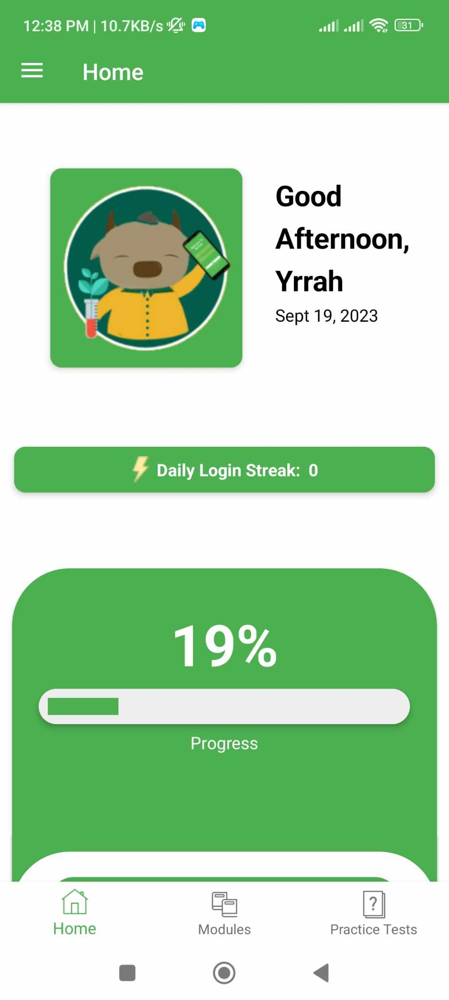
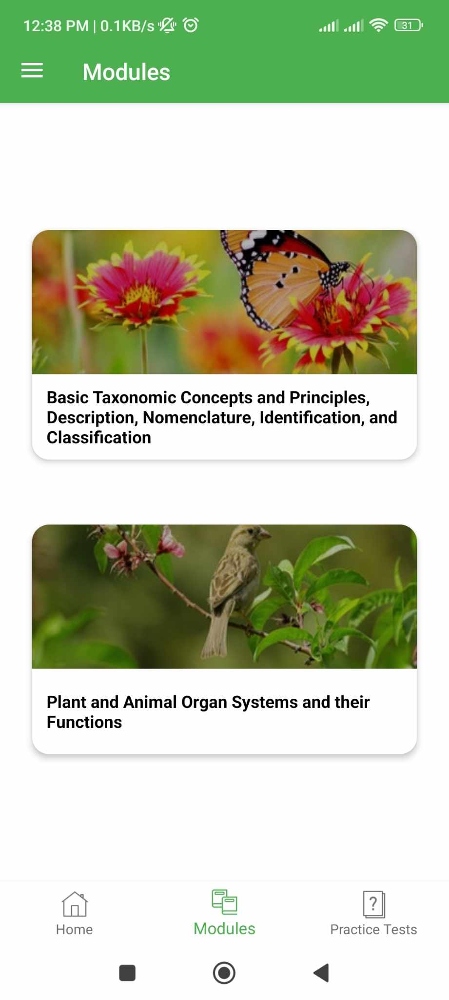
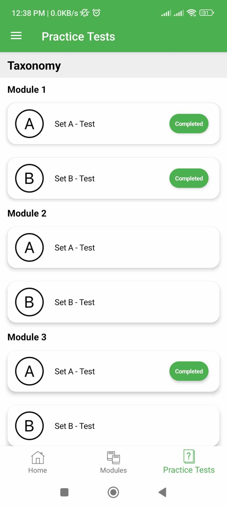
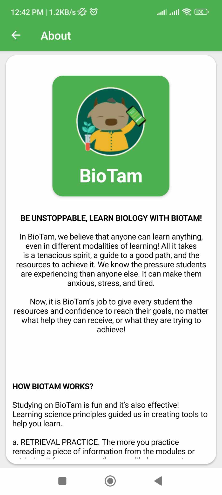

About Me
I am John Yrrah Chanchico Cabiles, a dedicated and hardworking student currently pursuing a Bachelor of Science in Information Technology. With a passion for web development and a knack for problem-solving, I thrive in collaborative environments where I can learn from others and share my insights. I strongly believe in the value of considering different opinions before making decisions, as it leads to more informed and well-rounded choices.
Education
Degree |
University |
Year |
|---|---|---|
|
Bachelor of Science in Information Technology |
De La Salle University - Dasmariñas |
2021 - Present |
|
Senior High School (STEM) |
Far Eastern University - Cavite |
2019 - 2021 |
Skills and Expertise
With a diverse skill set encompassing programming, web development, and UI/UX design, I am well-equipped to create engaging and user-friendly digital experiences. Here's a breakdown of my key skills:
Programming and Development:
-
 Python Proficient in Python programming for versatile applications, from web development to automation and data analysis.
Python Proficient in Python programming for versatile applications, from web development to automation and data analysis.
-
 C# (C Sharp): Skilled in developing software applications using C# with a focus on user interfaces and functionality.
C# (C Sharp): Skilled in developing software applications using C# with a focus on user interfaces and functionality.
-
 Java: Experienced in Java development for creating cross-platform applications and robust backend systems.
Java: Experienced in Java development for creating cross-platform applications and robust backend systems.
-
 HTML & CSS: Expertise in crafting responsive and visually appealing web interfaces using HTML for structure and CSS for styling.
HTML & CSS: Expertise in crafting responsive and visually appealing web interfaces using HTML for structure and CSS for styling.
-
 MySQL: Proficient in managing and querying databases, ensuring efficient data storage and retrieval.
MySQL: Proficient in managing and querying databases, ensuring efficient data storage and retrieval.
-
 PHP: Skilled in server-side scripting with PHP to create dynamic web applications and enhance website functionality.
PHP: Skilled in server-side scripting with PHP to create dynamic web applications and enhance website functionality.
UI/UX Design:
UI (User Interface) Design: With a keen eye for aesthetics and usability, I create visually pleasing and intuitive user interfaces. My designs prioritize user experience, ensuring that interfaces are user-friendly and navigation is seamless.
UX (User Experience) Design: I focus on enhancing the overall experience of users by conducting user research, usability testing, and creating wireframes and prototypes. This approach ensures that digital products are both functional and enjoyable to use.
These skills allow me to bridge the gap between development and design, resulting in well-rounded digital solutions that not only function flawlessly but also provide a delightful user experience.
Projects
Brian: An Advanced Virtual Assistant
Brian is an advanced virtual assistant created to serve as a digital companion, capable of performing a wide range of tasks and interactions, thereby enhancing daily life with efficiency and enjoyment. This project drew inspiration from JARVIS, an AI featured in the movie Iron Man Directed by Jon Favreau.
I embarked on this endeavor during the pandemic in 2020, driven by both boredom and a strong desire to acquire new skills. This journey significantly expanded my knowledge of computer programming and fueled my determination to pursue a Bachelor of Science in Information Technology in college.
The following are the key features of Brian:
- Voice Interaction:
- Communicate naturally through voice commands and responses. Utilizes the pyttsx3 and speech_recognition modules for seamless voice interactions.
- Knowledge at Your Fingertips:
- Access an extensive knowledge base with Wikipedia integration, enabling Brian to provide answers to questions and queries.
- Web Browsing:
- Open web pages, search the internet, and access online information effortlessly with the webbrowser module.
- Task Automation:
- Automate repetitive tasks and execute system commands using Python's os and psutil modules.
- Email Management:
- Seamlessly manage emails, calendar events, and tasks through Google Calendar and Gmail APIs.
- Chatbot Capability:
- Engage in meaningful conversations with Brian, powered by the ChatterBot library, which learns and adapts conversation styles.
- Weather Updates:
- Stay informed about the weather conditions with the pyowm module, providing current weather data for different locations.
- Translator:
- Translate text between languages using the googletrans module, breaking down language barriers effortlessly.
- Clipboard Management:
- Copy, paste, and manage clipboard content with the pyperclip module for efficient data handling.
- Multimedia and Gaming:
- Play music, games, and engage with multimedia content, with the help of modules like pygame for multimedia and gaming experiences.
- Screen Control:
- Take control of screen with pyautogui, enabling screenshot capture and screen recording functionalities.
- Time Management:
- Access current time, date, and time zone information with Python's datetime and pytz modules.
- Search Engine Queries:
- Perform web searches and get instant answers using the Wolfram Alpha API.
- System Resource Monitoring:
- Keep track of system resources with psutil for monitoring CPU, memory, and more.
BioTam: A Mobile Learning Application for General Biology
    
BioTam is a cutting-edge mobile learning application designed to facilitate the study of general biology in a dynamic and engaging manner. Developed as part of a collaborative effort with my research team during my senior year in high school (Grade 12, 2021), BioTam represents the culmination of our collective dedication to educational technology and innovation.
The following are the key features of BioTam:
- Comprehensive Learning Modules:
- BioTam offers a wide array of modules covering various aspects of general biology. These meticulously designed modules provide users with in-depth knowledge, fostering a deep understanding of the subject matter.
- Interactive Quizzes:
- To reinforce learning and assess knowledge retention, BioTam includes interactive quizzes aligned with each module. Users can test their understanding and track their progress over time.
- User Login System:
- BioTam features a secure login system, allowing users to create accounts and access personalized learning experiences. This system ensures that each user's progress is tracked and tailored to their individual needs.
- Progress Tracking:
- Our application boasts a robust progress tracking system that enables users to monitor their advancement through the modules and quizzes. This feature empowers learners to set goals and track their educational journey effectively.
- Leaderboards:
- To promote healthy competition and motivation, BioTam includes leaderboards where users can compare their progress with others. This gamified approach encourages users to strive for excellence.
- User Groupings:
- BioTam offers the flexibility of organizing users into sections or groups. This functionality is particularly valuable for educators who wish to manage and monitor the progress of multiple students simultaneously.
Interests
My top 5 favorite Animes are the following:
-
Overlord
-
Here is a synopsis from MyAnimeList's website:
The final hour of the popular virtual reality game Yggdrasil has come. However, Momonga, a powerful wizard and master of the dark guild Ainz Ooal Gown, decides to spend his last few moments in the game as the servers begin to shut down. To his surprise, despite the clock having struck midnight, Momonga is still fully conscious as his character and, moreover, the non-player characters appear to have developed personalities of their own!
Confronted with this abnormal situation, Momonga commands his loyal servants to help him investigate and take control of this new world, with the hopes of figuring out what has caused this development and if there may be others in the same predicament. -
That Time I Got Reincarnated as a Slime
-
Here is a synopsis from MyAnimeList's website:
Thirty-seven-year-old Satoru Mikami is a typical corporate worker, who is perfectly content with his monotonous lifestyle in Tokyo, other than failing to nail down a girlfriend even once throughout his life. In the midst of a casual encounter with his colleague, he falls victim to a random assailant on the streets and is stabbed. However, while succumbing to his injuries, a peculiar voice echoes in his mind, and recites a bunch of commands which the dying man cannot make sense of.
When Satoru regains consciousness, he discovers that he has reincarnated as a goop of slime in an unfamiliar realm. In doing so, he acquires newfound skills—notably, the power to devour anything and mimic its appearance and abilities. He then stumbles upon the sealed Catastrophe-level monster "Storm Dragon" Veldora who had been sealed away for the past 300 years for devastating a town to ashes. Sympathetic to his predicament, Satoru befriends him, promising to assist in destroying the seal. In return, Veldora bestows upon him the name Rimuru Tempest to grant him divine protection.
Now, liberated from the mundanities of his past life, Rimuru embarks on a fresh journey with a distinct goal in mind. As he grows accustomed to his new physique, his gooey antics ripple throughout the world, gradually altering his fate. -
Mushoku Tensei: Jobless Reincarnation
-
Here is a synopsis from MyAnimeList's website:
Despite being bullied, scorned, and oppressed all of his life, a 34-year-old shut-in still found the resolve to attempt something heroic—only for it to end in a tragic accident. But in a twist of fate, he awakens in another world as Rudeus Greyrat, starting life again as a baby born to two loving parents.
Preserving his memories and knowledge from his previous life, Rudeus quickly adapts to his new environment. With the mind of a grown adult, he starts to display magical talent that exceeds all expectations, honing his skill with the help of a mage named Roxy Migurdia. Rudeus learns swordplay from his father, Paul, and meets Sylphiette, a girl his age who quickly becomes his closest friend.
As Rudeus' second chance at life begins, he tries to make the most of his new opportunity while conquering his traumatic past. And perhaps, one day, he may find the one thing he could not find in his old world—love. -
Sword Art Online
-
Here is a synopsis from MyAnimeList's website:
Ever since the release of the innovative NerveGear, gamers from all around the globe have been given the opportunity to experience a completely immersive virtual reality. Sword Art Online (SAO), one of the most recent games on the console, offers a gateway into the wondrous world of Aincrad, a vivid, medieval landscape where users can do anything within the limits of imagination. With the release of this worldwide sensation, gaming has never felt more lifelike.
However, the idyllic fantasy rapidly becomes a brutal nightmare when SAO's creator traps thousands of players inside the game. The "log-out" function has been removed, with the only method of escape involving beating all of Aincrad's one hundred increasingly difficult levels. Adding to the struggle, any in-game death becomes permanent, ending the player's life in the real world.
While Kazuto "Kirito" Kirigaya was fortunate enough to be a beta-tester for the game, he quickly finds that despite his advantages, he cannot overcome SAO's challenges alone. Teaming up with Asuna Yuuki and other talented players, Kirito makes an effort to face the seemingly insurmountable trials head-on. But with difficult bosses and threatening dark cults impeding his progress, Kirito finds that such tasks are much easier said than done. -
Demon Slayer
-
Here is a synopsis from MyAnimeList's website:
Ever since the death of his father, the burden of supporting the family has fallen upon Tanjirou Kamado's shoulders. Though living impoverished on a remote mountain, the Kamado family are able to enjoy a relatively peaceful and happy life. One day, Tanjirou decides to go down to the local village to make a little money selling charcoal. On his way back, night falls, forcing Tanjirou to take shelter in the house of a strange man, who warns him of the existence of flesh-eating demons that lurk in the woods at night.
When he finally arrives back home the next day, he is met with a horrifying sight—his whole family has been slaughtered. Worse still, the sole survivor is his sister Nezuko, who has been turned into a bloodthirsty demon. Consumed by rage and hatred, Tanjirou swears to avenge his family and stay by his only remaining sibling. Alongside the mysterious group calling themselves the Demon Slayer Corps, Tanjirou will do whatever it takes to slay the demons and protect the remnants of his beloved sister's humanity.
Just Nothing
This text is BoldThis text is Emphasized
This text is Italic
This text is Small
This is Subscript and Superscript
This text is Strong
This text is Big
This text is Underline
This text is Teletype